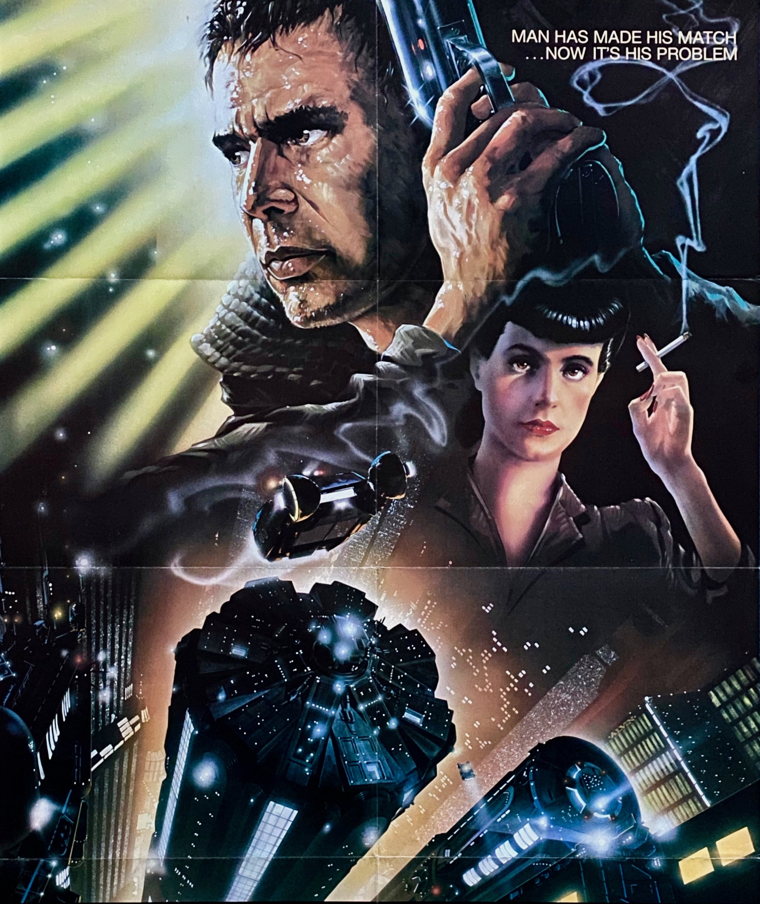

HARRISON FORD
IS
BLADE RUNNER
JERRY PERENCHIO AND BUD YORKIN PRESENT
A MICHAEL DEELEY - RIDLEY SCOOT PRODUCTION
STARRING HARRISON FORD
IN BLADE RUNNER WITH RUTGER HAUER SEAN
EDWARD JAMES OLOMOS SCREENPLAY BY HAMPTON FANCHER AND DAVID PEOPLES
EXECUTIVE PRODUCERS BRIAN KELLY AND HEMPTON FANCHER VISUAL EFFECTS BY DOUGLAS TRUMBULL
ORIGINAL MUSIC COMPOSED BY VANGELIS ASSOCIATE PRODUCER IVOR POWELL PRODUCED BY MICHAEL DEELEY DIRECTED BY RIDLEY SCOTT
ORIGINAL SOUNDTRACK ALBUM AVALIBLE ON POLYDOR RECORDS PANAVISION © TECHNICOLOR © ©©© IN SELECTED THEATRES
THRU WARNER BROS © A WARNER COMMUNICATIONS COMPANY